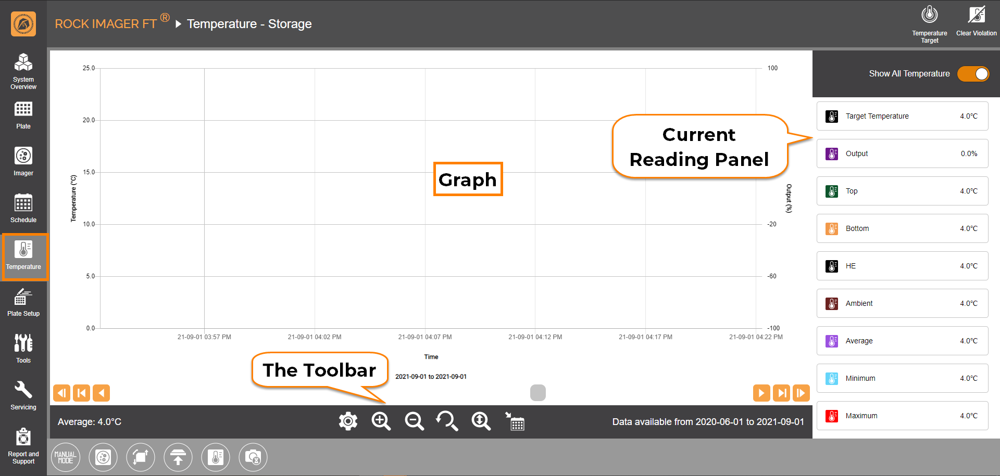
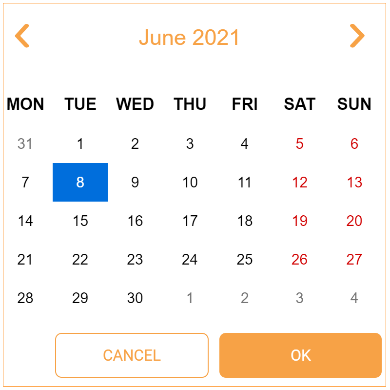
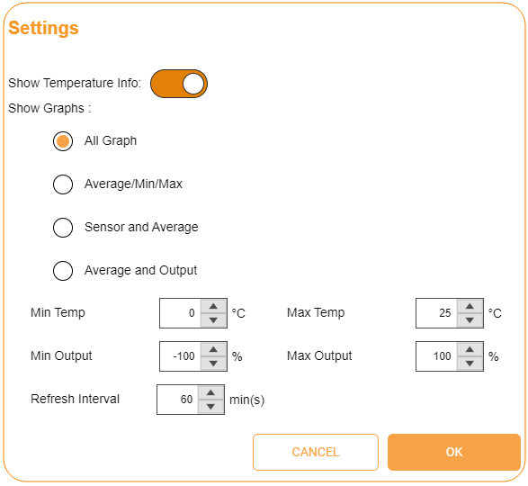

Temperature Menu¶
The ROCK IMAGER FT’s storage temperature can be controlled and set anywhere from 4° C up to 30° C in order to help you optimize your crystallization experiments. The Temperature menu provides a graph that illustrates the current temperature and the ROCK IMAGER FT’s temperature history. You can also view specific temperature data for particular time periods.
{kind=link}
Temperature Menu
Graph
The Graph shows current temperature data from your ROCK IMAGER FT instrument or shows you saved temperature data from a previous point in time. It consists of a single X axis and two Y axes. The X axis displays the Time of the temperature recording in the chosen interval, whereas the Y axes display the Temperature level and the Output.
The Temperature is represented in degrees Celsius, while the Output of the temperature controller is represented as the percentage of total possible power usage for the temperature control. The data taken from each temperature sensor in ROCK IMAGER is displayed in a different color, for easy identification. See the Current Reading Panel below for more information.
Note
To see the exact reading from a sensor, hover your mouse over the corresponding sensor line on the Graph.
{kind=link}
Information Tooltip That Appears When Hovering the Mouse Over a Sensor Line
Use the buttons under the Graph to move through different points in time from the temperature record’s history.
— Jumps to the earliest temperature data recorded on the day before the currently opened data was recorded.
— Jumps to the earliest temperature data recorded on the day after the currently opened data was recorded.
— Jumps to the earliest temperature data recorded the same day you open the data.
— Jumps to the latest temperature data recorded the same day you open the data.
— Moves the graph to the right in one minute time intervals.
{kind=link}
{kind=link}
{kind=link}
{kind=link}
{kind=link}
{kind=link}
Current Reading Panel
The Current Readings panel on the right side of the screen shows you the current temperature data taken from the system’s sensors. Each temperature sensor is represented by a different color line on the graph. The Current Readings panel only shows you current live data, even if you jump to a different period on the graph.
Note
If the Current Readings panel isn’t available yet on the screen, click the Settings button and enable Show Temperature Info. You can also click on a specific sensor in the panel to disable it.
Target Temperature: Shows the desired temperature you want the system to achieve. Click the Temperature Target in the upper-right corner of the screen to set one.
Output: Tells you the percentage of the total possible power result for the temperature control.
Top: Informs you of the temperature taken from the system’s top sensor.
Bottom: Shows you the temperature read by the bottom sensor of the system.
HE (Heat Exchanger): Tells you the temperature data taken from the Heat Exchanger.
Ambient: Shows you the room temperature value where your ROCK IMAGER FT is installed.
Average: Tells you the average temperature of the top and bottom sensors in your ROCK IMAGER system.
Minimum: Informs you of the coldest temperature detected by any of the sensors.
Maximum: Displays the hottest temperature detected by any of the sensors.
{kind=link}
{kind=link}
The Toolbar
The Toolbar consists of:

Settings button — Launches the Settings dialog box, as shown in the image below:
Settings Dialog Box
The Show Temperature Info option allows you to display the Current Readings panel.
The Show Graph option lets you choose how you want the live temperature data to be displayed in the Graph area. Select All Graph to display all of the available sensors or Average/Min/Max to display the Average, Minimum, and Maximum of the current temperature results from all sensors.
The Min Temp, Max Temp, Min Output, and Max Output fields let you define the minimum and maximum values used for the Y axes on the Graph. ROCK IMAGER FT can also refresh the Graph data in order to reduce the amount of memory used by the software. Type the desired value in the Refresh Interval field to dictate how frequently the data is refreshed.
Zoom In button — Lets you observe the temperature graph data in a smaller time interval; for example, from days to hours, or minutes to seconds.
Zoom Out button — Lets you observe the temperature graph data in a larger time interval;for example, from hours to days, or seconds to minutes.
Reset Zoom button — Observes the temperature graph at the original zoom.
Best Y Zoom button — Adjusts the Y axes’ magnitude to its best view so that all the temperature and output graphic data that are recorded will be properly displayed.
Jump to Date button — Views the temperature data from a certain date. Define the year, month and day as desired in the Calendar window that appears.
Calendar Window
{kind=link}
{kind=link}
{kind=link}
{kind=link}
{kind=link}
{kind=link}
{kind=link}
{kind=link}